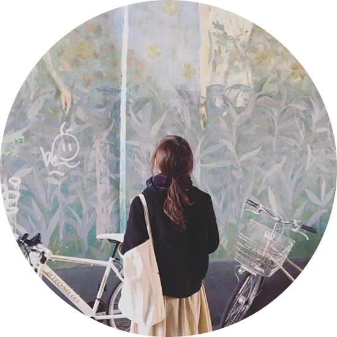

坂本 琴絵（Kotoe Sakamoto）
長野県生まれ
和光大学 表現学部芸術学科 在学
広告デザイン・パッケージデザイン制作を中心に活動しています
好きなこと 文字組み・紙収集・活版印刷
2016年
恋する惑星展(和光大学 ホワイトギャラリー)
ピンクリボン展(和光大学 バス内)
2017年
love letter展(和光大学 ホワイトギャラリー)
Born90`s Photographer展(和光大学 ホワイトギャラリー)
légume展(和光大学 パレストラ・ホワイトギャラリー)